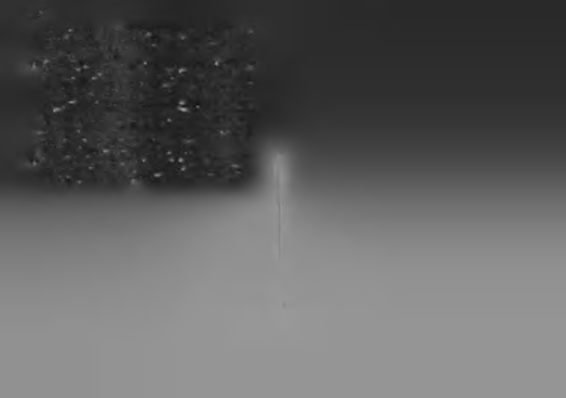

Ruhunuza dar gelen bir hayattan sıkıldıysanız, kendinize
N O T L A R
özgür, mutlu ve başarılı bir hayat armağan edin. Bu bencillik
değildir, dünyanın iyiliği için böyle yapıyorsunuz. Dünyadan
bir başarısızı eksilttiğinizde, dünya daha iyi bir yer olacak!
1
Hintli bir dostumla sohbet ederken söylemişti. "Dünya malı dünyada
Artık veda vakti. Kitap bitti ama hayat akmaya devam
kalır" m Hintçe meali olsa gerek.
ediyor.
2 Seinfeld dizisinde yapılmış bir espriden üretilmiş bir düşüncedir.
3
Aktör arkadaşım Tamer Karadağlı'nm kızı Zeyno da bir Teksaslı olarak
Yönünüz belli, iradeniz kuvvetli, kanadınız kudretli olkendi işini kendi halletmeyi çok sever. Yere düşen oyuncağını alıp ona sun. Yürüdüğünüz yolda iz kalsın. İnsanlar sizi "işini iyi yaveremezsiniz, tekrar yere atıp gidip kendi alır! Sonra size getirip oynapan biri" diye ansın.
mayı teklif eder.
4 Beydaba'nm yazdığı Kelile ve Dimne çok eski bir Hint öykü kitabıdır.
Bir gün, bir şekilde, zirvede bir yerlerde görüşmek dile-
Kitap öykü ormanı gibidir; öykü içinde öykü anlatılır. Bu öyküyü alır
ğiyle.
ken aslma sadık kaldım ancak kitabın konseptine göre öyküyü biraz de-
Aklınız açık olsun!
taylandırdım ve yorumladım.
5
'Sıcak soğuk yapmak', son dönemde yeni yetmelerin kullandıkları bir
deyimdir. Bir ilişkinin başında sevgili adayına önce çok yoğun ilgi gös
MS
terip, sonra bir süre ilgilenmeyip, sonra tekrar ilgilenip, sonra tekrar il-
gisizleşip şaşırtmaya deniyor.
6 Sezen Aksu'nun o dönemdeki en yakın arkadaşıyla tanıştığımda, ona
bunu da sordum. Her başarısızlığın Aksu'nun umutlarını kırdığını ama
(u)mutsuz halde de olsa çalışmaya devam ettiğini söyledi. Bazı insanlar
başarıya giderken hep pozitif ruh durumunda olmaları gerektiğini dü
şünür. Oysa zirvede gördüğüm insanların çoğu, ilk başladıklarında büyük hayal kırıklıkları, ağır depresyonlar, yoksulluk ve (u)mutsuzluk halinde büe çalışmaya devam eden insanlardı. İnsan sadece pozitif veya negatif düşündüğü için değil, başarının gereğini yaptığı için başarır.
Hele bir pozitif düşünüp, mutlu olayım, o zaman başarılı olacağım diyenlere duyurulur!
7 Anlattığına göre henüz "bebekken" dansçı (dansöz) olmak istiyormuş
ama, "Allah annem ile babamın yüzüne baktı, sonradan bu sevdamdan
vazgeçip şarkıcılığa geçtim!" diyor.
8 Elif Ergu röportajı/Vatan Gazetesi
9 Yosun Akverdi / Jetlife
10 Bu konuda detaylı bilgi için "Kişisel Ataleti Yenmek" adlı kitabım okunabilir.
11 Tahmini birkaç örnek! "On parmak daktilo" Necmiye! "Rövaşatacı" Re-
sül! "Google atmacası" Ertan! Acaba lakap takma kültürümüz bu geleneğin halen gizlice yaşadığını gösteriyor olabilir mi?
